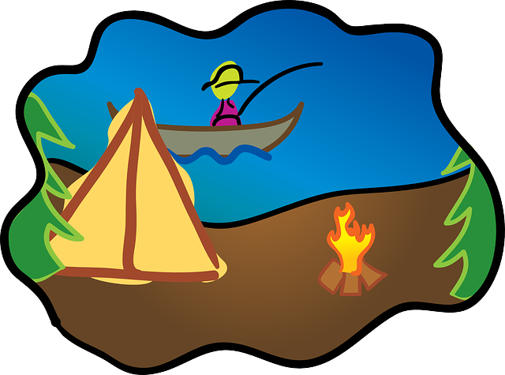

Services
Locations
About
Contact Us
Fishing & Boating

New York State - NY
Fishing
Opening NY Fishing Season 2017
Long Island Fishing Places
Boating
NY State Safe Boating
Best boating destinations in Upstate NY
New Jersey State - NJ
Fishing
Freshwater Fishing NJ
Jersey Shore Fishing
Boating
Enjoy summer in a boat
New Jersey-Approved Boating Course
Connecticut State - CT
Fishing
Connecticut Charter & Party Boat Association
CT Fishing
Boating
Boating - CT 2017
How to Get a Certificate to Operate a Vessel